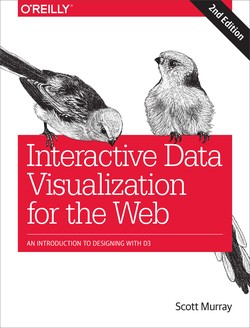

|  |
Author: Scott Murray Assistant Professor of Design in Performing Arts Department at University of San Francisco. D3 (3.x) Tutorials O'Reilly Interactive Data Visualization for the Web, 2nd Edition 程式碼下載: github |
 This icon signifies a
This icon signifies a